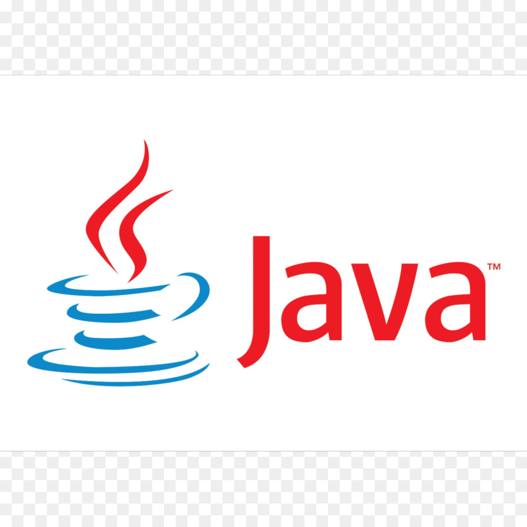

Education
University
Passed the Kankor exam in 2021 and accepted in IT department of
Computer Science field with
309 marks. Completed the two semesters of this
field and studied the basics of Java language. In both
semesters, had the 2nd position with 95% and
94%.
Computer
I have studied the ICDL(windows,word,powerpoint, and excel)
programs in WASSA. I was one the best students of my term.
School
I am graduated from high school in 2021. At school, I had the
first position from 3th grade until 12th grade and my last 3
grades's transcript's percentage is 99.35%.
English
I have completed the two systems(Interchage and Q-skills) in JRS
project. After graduating from JRS, I started learning American
English File in a private center by the name of Dana Academy.
Skills

HTML: Hyper Text Markup Language

CSS: Cascading Style Sheet

TailwindCSS

JavaScript(started recently)
Java(just the fundamental parts)